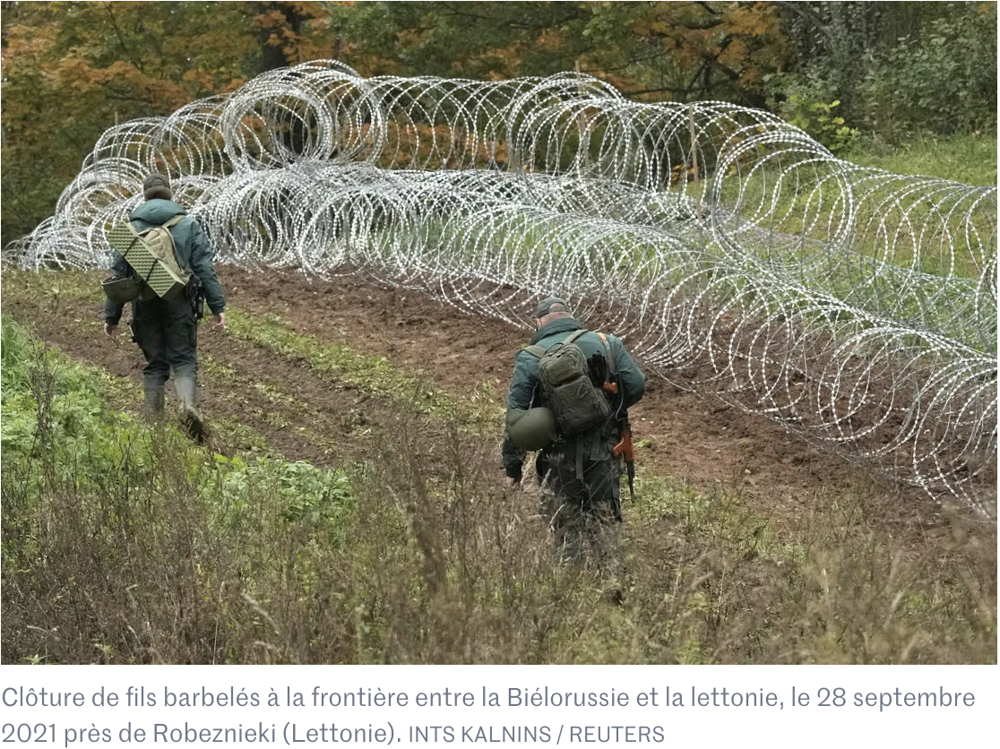

MISSION GÉOGRAPHIQUE · PREMIÈRE
Les frontières
sous contrôle.
Pourquoi les frontières se ferment-elles ? Comment les États contrôlent-ils les déplacements ? Explore les frontières du monde et découvre les nouvelles formes de barriérisation.

TON PARCOURS
Ta progression
0 / 3
Trois missions pour devenir un expert des frontières.